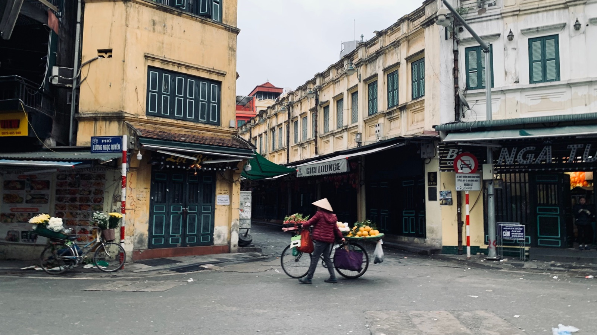

보관
오토바이를 한 달 맡겨둘 때: 베트남에서 보관하는 법

몇 주 동안 비와 햇빛 아래 오토바이를 두면, 돌아왔을 때 방전된 배터리, 바람 빠진 타이어, 산화된 접점부터 마주할 수 있습니다. 제대로 된 보관은 커버가 아니라 건조하고 안전한 장소에서 시작됩니다.
어디에 둘까
가장 좋은 곳은 직사광선과 침수가 없는 지붕 있는 관리 주차장입니다. 출입 시간, 요금, 주차장의 책임 범위, 키 관련 규칙을 확인하세요. 오토바이, 번호판, 자리, 주차권을 사진으로 남기세요.

떠나기 전 준비
- 세차하고 완전히 말리기;
- 모델 기준에 맞게 타이어 공기압 확인;
- 수납함에서 음식, 서류, 귀중품 꺼내기;
- 주유하고 보관 기간에 대한 제조사 권장 사항 따르기;
- 정비 기준에 있다면 잠금장치와 움직이는 부위 윤활;
- 핸들 잠그고 보조 자물쇠 사용.
배터리
약한 배터리는 몇 주면 방전될 수 있습니다. 장기 보관 시에는 정비사와 단자 분리나 적합한 유지 충전기 사용을 상의하세요. 지인에게 2분만 시동 걸어 달라고 하지 마세요: 짧은 공회전은 충전을 다 채우지 못하고 결로만 늘릴 수 있습니다.
커버와 습기
커버는 깨끗하고 크기가 맞으며 안에 물이 고이지 않아야 합니다. 야외에서는 지붕을 대신하지 못하고, 바람에 외장을 긁을 수 있습니다. 우기에는 통풍과 바퀴 아래 물이 없는 것이 특히 중요합니다.
누군가에게 타 달라고 할까
상대가 능숙하게 타고 운전 자격이 있다면, 가끔 제대로 한 바퀴 타는 것이 짧은 시동보다 나을 수 있습니다. 하지만 키는 믿을 수 있는 사람에게만 맡기고, 주차, 연료, 고장 시 대처를 미리 정하세요.
돌아온 뒤
- 오토바이 아래 바닥에 누유가 있는지 보세요.
- 타이어, 브레이크, 라이트, 연료량을 확인하세요.
- 시동을 걸고 스로틀을 급히 감지 말고 안정될 때까지 두세요.
- 주차장 근처를 짧고 차분하게 달려보세요.
- 시동이 어렵거나 이상한 소리가 나면 정비소에 가세요.
정기 정비 목록은 더운 기후에서의 오토바이 관리에, 주차장 고르는 법은 냐짱 주차에 있습니다.
요약
지붕 있는 관리 주차장, 깨끗하고 마른 오토바이, 점검한 타이어, 배터리 대책 — 한 달 뒤 편하게 돌아오기 위한 기본입니다.